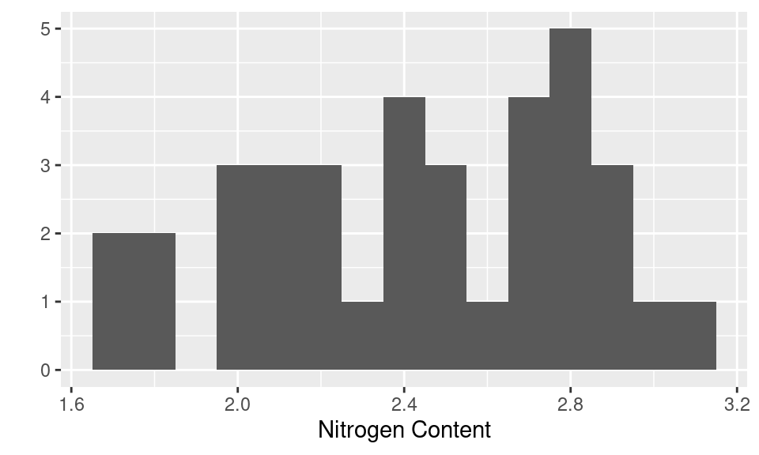
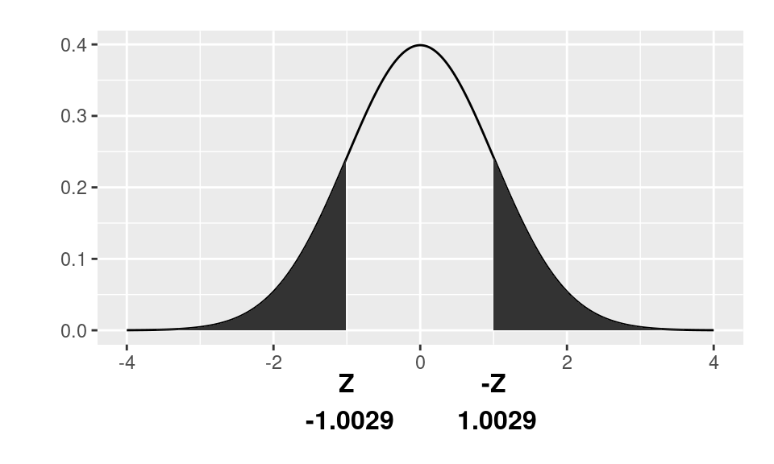

In this lab you will calculate a z-value, perform a hypothesis test, and find a confidence interval estimate for the mean based on the formulae presented in the lectures. Doing the calculations like this “by hand” helps cement the operations, but in future modules, you’ll use built-in functions to conduct the analysis procedures.
You’ll also see how you might report the results in a non-technical summary of your findings. Communication is an essential part of the analysis cycle, and doing this accurately, and in the context of the problem, is a key skill you’ll practice all quarter.
In this lab, you’ll be working with nitrogen content data from Ott and Longnecker’s book, An Introduction to Statistical Methods and Data Analysis, 5th Edition. Leaves from 36 different apple tree orchards are crushed and their percentage nitrogen content is analyzed. This will give scientists an idea of the mean nitrogen content of apple trees across all such orchards and whether there is too little or too much nitrogen. The best yield occurs when the nitrogen content is approximately 2.5%.
This data is stored in a data frame called nitrogen. Data frames are an object type in R specifically for storing rectangular data sets (i.e. data stored in rows and columns, where each row has the same number of columns, and each column has the same number of rows). If you type a data frame’s name you’ll see the entire data set:
nitrogenThis isn’t a particularly exciting data frame because it only has one column: a column called nitrogen_content. Notice that there are 36 rows, each row corresponds to one orchard, and there are 36 orchards in this study.
As data sets get larger, printing the entire data frame becomes less useful since there are so many rows. Instead you might like to just print the first few rows using the head() function:
head(nitrogen)The ex0321 data set from the Sleuth3 package has the lifetime of baseball umpires.
ex0321In previous modules you’ve mostly been working with vectors not data frames.
In this lab you’ll continue that practice, so we’ll pull out the nitrogen_content column from the nitrogen data frame, and store it in a vector called x. x isn’t a particularly informative variable name, but we use it here to help you see the correspondence between the code and the formula from lecture.
# Define `x` as:
# *all rows*, and
# *the column called "nitrogen_content"*
# of "nitrogen"
x <- nitrogen[ , "nitrogen_content"] You’ve seen square brackets [ used to subset a vector, and they can also be used to subset a data frame. However, since data frames are two dimensional (they have rows and columns), you must specify two arguments to [, the first indexing the rows, and the second indexing the columns. If an argument is blank, it defaults to “all”, e.g. here a space before the comma indicates “all rows”.
Take a look at a histogram of the 36 nitrogen contents to get a sense of our data.
qplot(x, binwidth = 0.1, xlab = "Nitrogen Content")
This sample has a mean of about 2.43
mean(x)## [1] 2.433611In the next two sections you’ll:
Some of the umpires in ex0321 were still alive at the time of the study, we might exclude them since we don’t know their actual life length, only that it is greater then then value recorded.
This code, extracts the values in the column for life length for only the rows of umpires that had died by the time of the study (Censored == 0), and stores them in a vector called umpire:
not_alive <- ex0321[, "Censored"] == 0
umpire <- ex0321[not_alive, "Lifelength"]umpire:
mean(umpire)We are interested in the null hypothesis that the mean nitrogen content of all orchard trees is 2.5, and the alternative hypothesis is that mean nitrogen content of all orchard trees is different than 2.5. (This value has been chosen because the best yield happens when the nitrogen content is approximately 2.5%).
In mathematical notation:
\[H_{0}: \mu = 2.5\] \[H_{A}: \mu \neq 2.5\]
With a sample size of 36 and no outliers and no indication of strong skew, we know \(\overline{x}\) is approximately Normally distributed. Therefore, under \(H_{0}\):
\[Z = \frac{\overline{x} - \mu}{s/\sqrt{n}} \stackrel{\cdot}{\sim} N(0,1)\]
For more details, see Module 4 lectures, or Section 4.3.4 of OpenIntro Statistics. For now, we focus on the calculating the test statistic in R, and getting a p-value. The Z-statistic is
# Calculate z-statistic
Z <- (mean(x) - 2.5) / (sd(x)/sqrt(length(x)))
Z## [1] -1.00293You can think about this as a standardized measure of how far our sample mean is from our hypothesized mean, relative to the variation we would expect from the sample mean in samples of this size.
We quantify how unusual our sample would be if the null hypothesis were true, by finding the p-value. If the null hypothesis were true, then \(Z\) would be distributed as a standard Normal, and we need to find the probability a standard Normal is as, or more extreme, than -1.0029. The pnorm() can be used to find this value exactly. If you provide pnorm() with a quantile (our test statistic) it will return a probability:
# Calculate p-value (two-sided test)
P <- 2 * pnorm(abs(Z), mean = 0, sd = 1, lower.tail = FALSE)
P## [1] 0.3158947The argument lower.tail = FALSE tells pnorm() to return the probability that a N(0,1) random variable is greater than the absolute value of Z, thus giving us the probability in the right tail. Since we are performing a two-sided test, we must multiply this probability by 2 — the probability a N(0,1) random variable is greater than Z or less than Z. This gives us the total probability of obtaining a sample mean at least as far from the center of the population as the sample mean that we have. Use ?pnorm() to learn more about the function.
To illustrate, here’s the a standard Normal distribution with the probabilities we are estimating shaded in dark grey: 
So what does this tell us? This tells us that if the null hypothesis (\(H_{0}\)) is true, the probability of observing a sample mean as unlikely (in this case–as far from the center of the population), or more unlikely (in this case–or farther away from the center of the population), than what we actually observed is \(0.3159\). That is fairly likely! Or in other words, our sample is consistent with the null hypothesis, or we have no evidence against the null hypothesis.
With the umpires that had died by the time of the study, test the hypothesis \(H_0: \mu = 69.5\) versus \(H_A: \mu < 69.5\), where \(\mu\) is the true average lifespan for umpires. Calculate the Z-statistic and p-value for this test. Note that the test is one-sided.
Z = (mean(umpire) - 69.5)/(sd(umpire)/sqrt(length(umpire)))
P = pnorm(Z)
list(Z=Z,P=P)For our nitrogen example, we ended up with a p-value of \(0.3159\). How do we present this finding? Here is an example of communicating the result:
There is no evidence to suggest that the mean nitrogen content of the population orchard trees is different from 2.5 units (two-sided Z-test p-value = \(0.32\), n = 36).
Some key points to note:
Now for a few wrong ways. Here are some too technical or incorrect summaries:
We conclude that the mean nitrogen content of the orchard trees is not 2.5.
The probability our conclusion (do not reject the null) is incorrect is \(0.3159\).
We conclude the null hypothesis is true, based on a p-value of \(0.3159\).
Can you figure out what is wrong with each statement?
For the umpire data, the p-value for the Z-test of the hypothesis \(H_0: \mu = 69.5\) versus \(H_A: \mu < 69.5\), where \(\mu\) is the true average lifespan for umpires, is \(0.027\).
We will now obtain an interval estimate of the actual mean nitrogen content of the orchard trees. Note that we use \(z_{\alpha/2}\) to denote the z-value with an area of \(\alpha/2\) to the right of it. The form for such an estimate with 95% confidence is:
\[\left(\overline{x} - z_{\alpha/2}\frac{s}{\sqrt{n}}, \overline{x} + z_{\alpha/2}\frac{s}{\sqrt{n}}\right)\]
Translated to code this is:
mean(x) - qnorm(0.975) * sd(x)/sqrt(length(x))
mean(x) + qnorm(0.975) * sd(x)/sqrt(length(x))The confidence interval is: \((2.3, 2.56)\)
Just like hypothesis test findings, there are a few right and wrong ways to present confidence interval findings. Here is one example of the right way:
With 95% confidence, the true mean nitrogen content of orchard trees is between \(2.3\) and \(2.56\).
Here are a few wrong ways to include findings in a non-technical summary:
There is a 95% probability that the true mean nitrogen content is between \(2.3\) and \(2.56\).
The true mean nitrogen content is between \(2.3\) and \(2.56\).
We are 95% confident that the sample mean nitrogen content is between \(2.3\) and \(2.56\).
Can you figure out what is wrong with each statement?
Notice that 2.5 is within the bounds of our confidence interval, so by this method we fail to reject the null hypothesis. This is consistent with our hypothesis test, and an illustration of the duality of confidence intervals and hypothesis tests.
For the umpire data: find a 95% confidence interval for the mean lifespan for umpires in umpires.
mean(umpire) - qnorm(0.975) * sd(umpire)/sqrt(length(umpire))
mean(umpire) + qnorm(0.975) * sd(umpire)/sqrt(length(umpire))